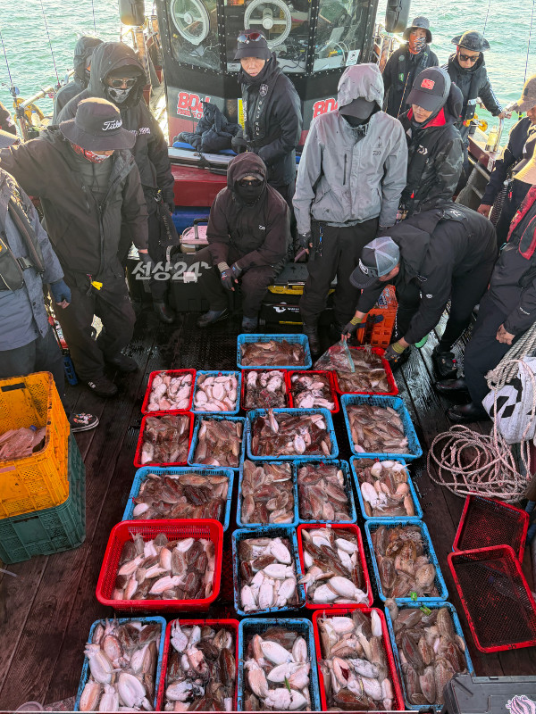
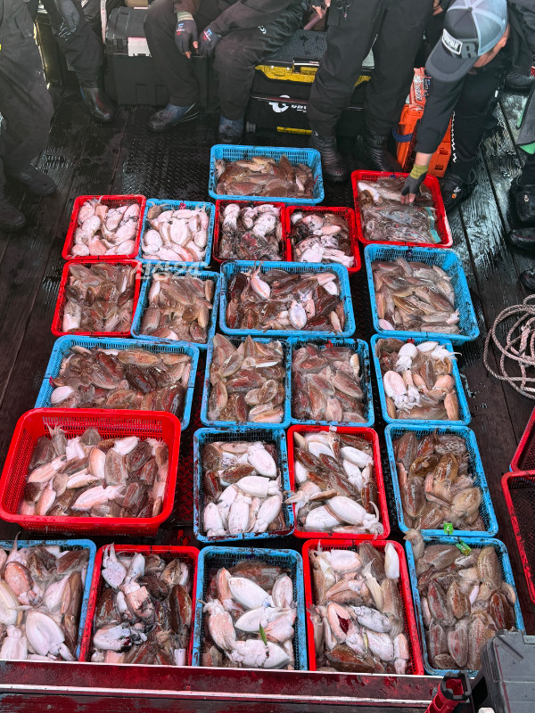

2026-10-22 · 안흥 스페이스호
조황정보 HOME / 조황정보 / 조황상세
10월 22일 안흥항 스페이스호 갑오징어 다시 시작인건가? 오늘은 올시즌 역대급 사이즈 마릿수 조황이 나온날 입니다.오늘의 조황은 협력선이자 협업선인 가가호 여명호 스페이스호가 만든 합작품 입니다.스페이스호는 19명 승산하는데 배에서 꼴찌가 47수면 배전체 마릿수와 일등 마릿수는 말해 뭐합니까.상상에 맞기겠습니다~^^세번 찾아온 피딩 한번도 안놓치고 입항까지 열심히 배질하고 입항했습니다.90마리 잡으신분이 중간에 멀미로 낚시를 접으시고 들어가셔서 조황사진에서는 빠졌습니다꼴찌도 두바구니를 사용할 정도로 좋은 사이즈의 갑오징어들이 쏟아졌습니다 ㅎㅎ*** 안흥 스페이스호 예약 안내 ***예약문의 : 010-3452-2718오시는길 : 충남 태안군 근흥면 안흥1길 32홈페이지 : https://spaceho.sunsang24.com/ 안흥 스페이스호 (서해안/안흥항) 1.7km 갑오징어 2026. 10. 22 | 조회 771 안흥 스페이스호 (서해안/안흥항) 2026. 10. 22 | 조회 771

